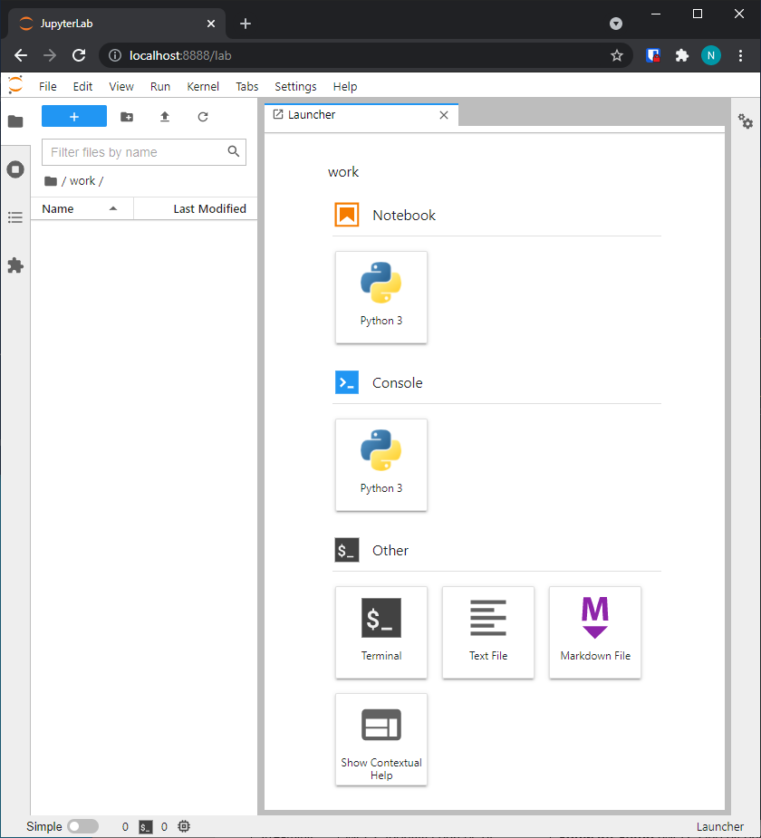
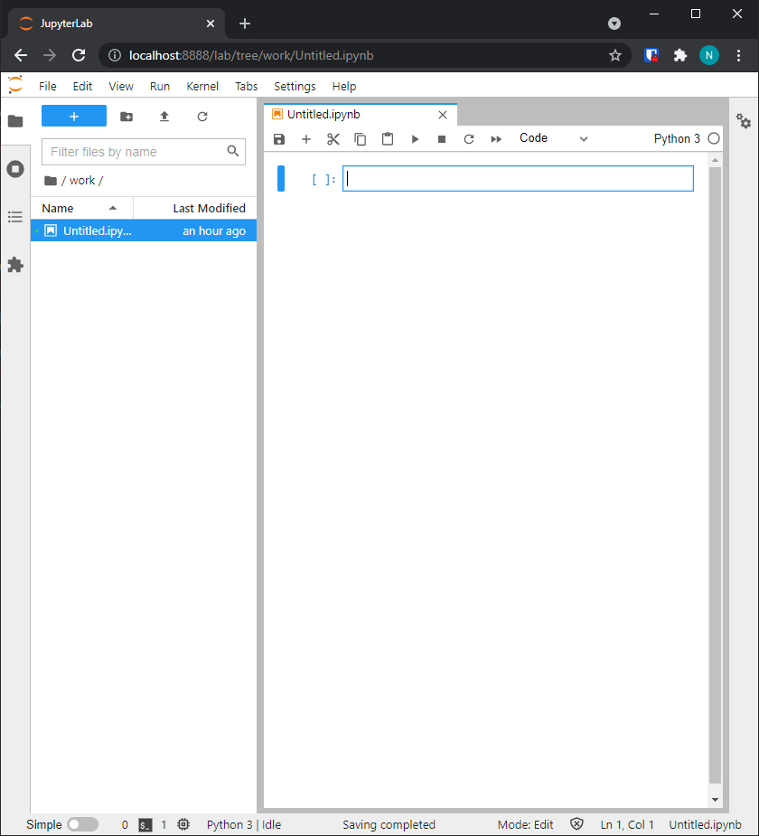
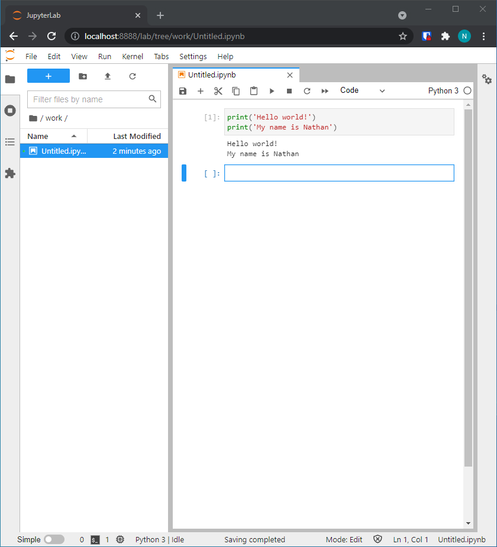
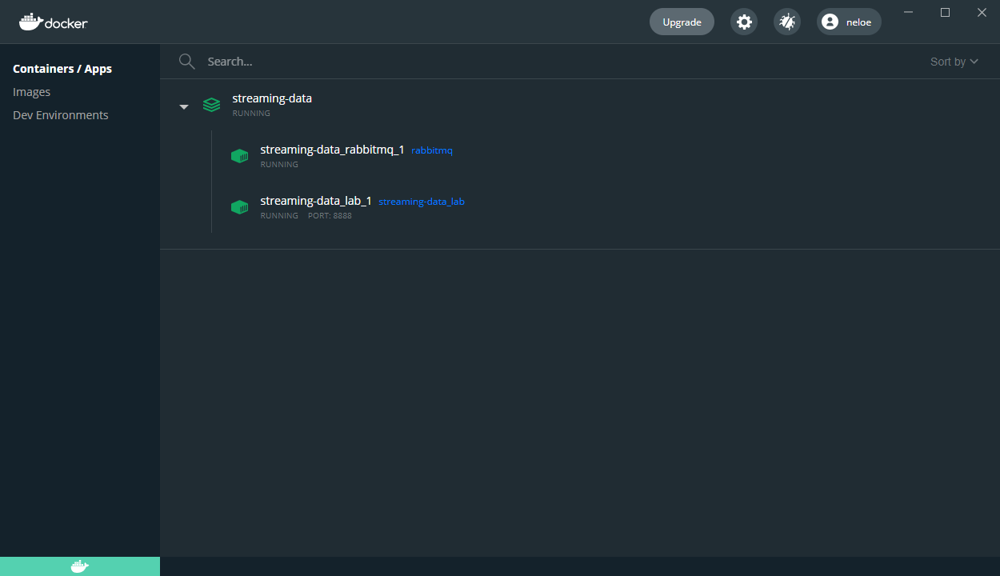
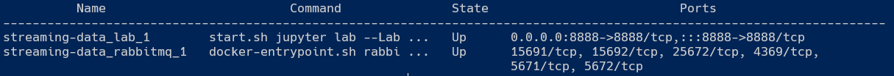
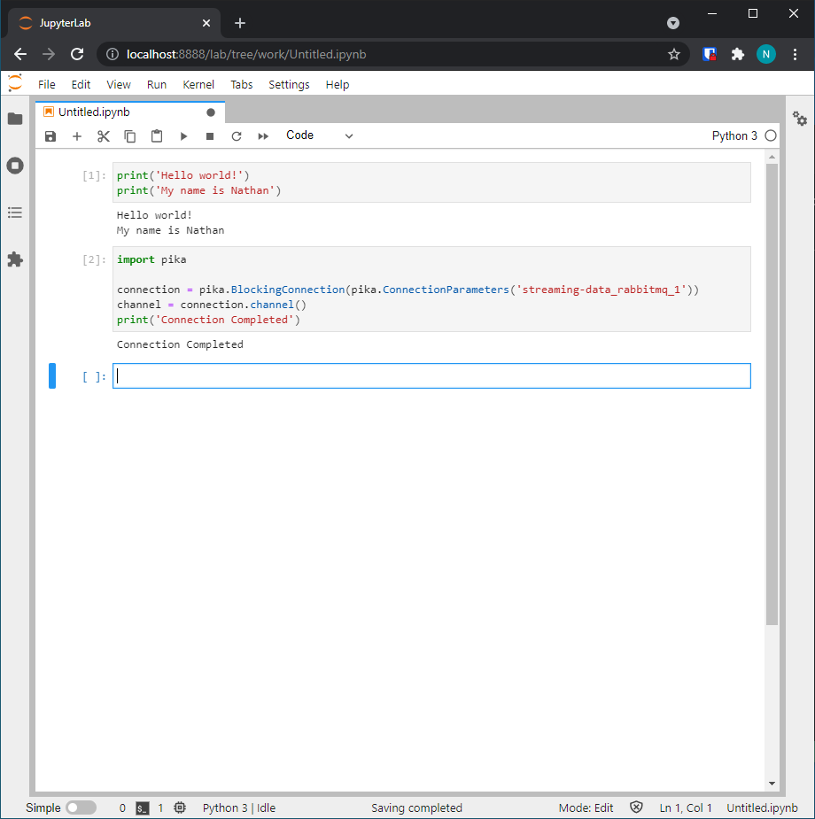
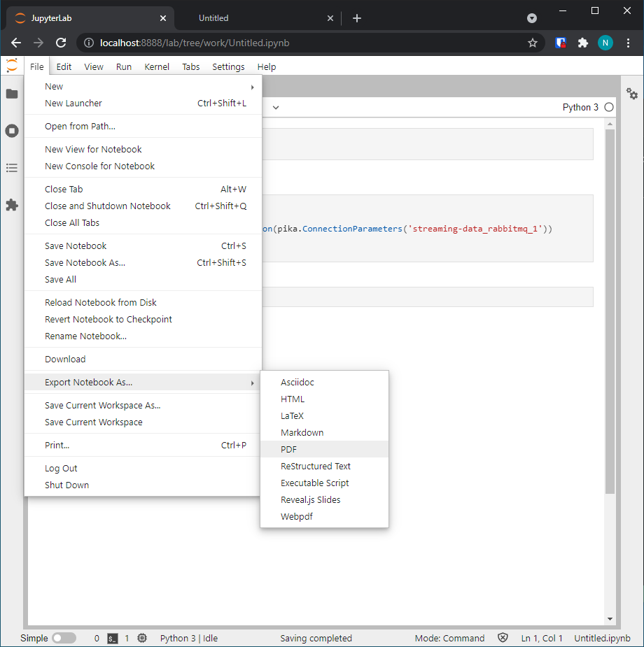

Testing Software Installation
44-671: Streaming Data
- Complete the installation of Docker and download the required files from the course website. Put the
.yml file in a directory you can easily find (I chose Documents/streaming-data)
- Open a terminal window in the directory you downloaded the
docker-compose.yml file
- Windows quicktip: go to the folder in the file explorer, type
powershell in the address bar, and hit enter
- Run the command
docker-compose up (type the command in the terminal and hit enter)
- Note: On Windows and MacOS, you'll be able to start the service through Docker Desktop for future assignments; you will be provided more information on how to start and stop the services when necessary
- If you have JupyterLab installed from another class, do NOT start it; it comes bundled with the container. Open a web browser and navigate to http://localhost:8888/lab
- Note: the Docker containers are designed to not require a username/password or token. This is not a secure practice; it is recommended you only have the docker application started when doing assignments and stop the application when you
are finished.
- You should see a window that looks like this:

- Note: you may see other files in the left hand pane; that is acceptable as they may be used later in the course
- In the right hand pane, under "Notebook" select the Python 3 Button. You should be greeted with a window that looks like this:

- The top box in the right hand pane is a \emph{cell}; we will create multiple cells in Python notebooks through the duration of this course. In the top cell write the following code (type it out; do NOT copy and paste):
print('Hello world!')
print('My name is <name>')
but replace <name> with your name. Run the cell either by pressing the triangle button at the top of the screen or by holding Shift and pressing Enter. The result should look similar to:

- Determine the name of your RabbitMQ instance
- Windows/MacOS: Open Docker Desktop, navigate to the Containers/Apps tab. You should see an app running (it may have a different name different for you)

- Linux: Run
docker-compose ps from the directory containing the docker-compose.yml file. You should see output like:

For me, the RabbitMQ instance is named streaming-data_rabbitmq_1; your name may differ. Use the instance name you see on your computer for the next step.
- In the new cell that was created at the bottom of the python notebook, write the following code (substituting
localhost with the hostname you determined in the previous step:
import pika
connection = pika.BlockingConnection(pika.ConnectionParameters('localhost'))
channel = connection.channel()
print('Connection completed')
Run the cell as you did above. The resulting output should look like (I closed the files tab so you could see all of the code):

If all goes well, you should get no errors (usually highlighted in red) and the message ``Connection Completed''. If you receive errors use your favorite search engine or contact your instructor to help in troubleshooting.
- Export your notebook: You can do this one of two ways. Regardless of which option you choose, make sure your generated HTML file contains the output (it should look identical to your notebook) and submit the HTML file to the course website.
- Option 1: Add a code cell with the following code:
!jupyter nbconvert --to html name_of_notebook.ipynb (replacing name_of_notebook.ipynb with the filename of the notebook you are working in). Eventually the html file will appear in the pane to the left and you can download it (Right click it and select Download).
- Option 2: In the file tab in JupyterLab, go to ``Export Notebook As...'' and choose HTML. It should download a file (possibly named
Untitled.html unless you changed the name of the notebook.
